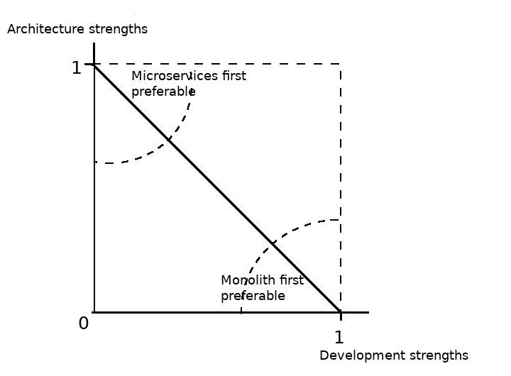
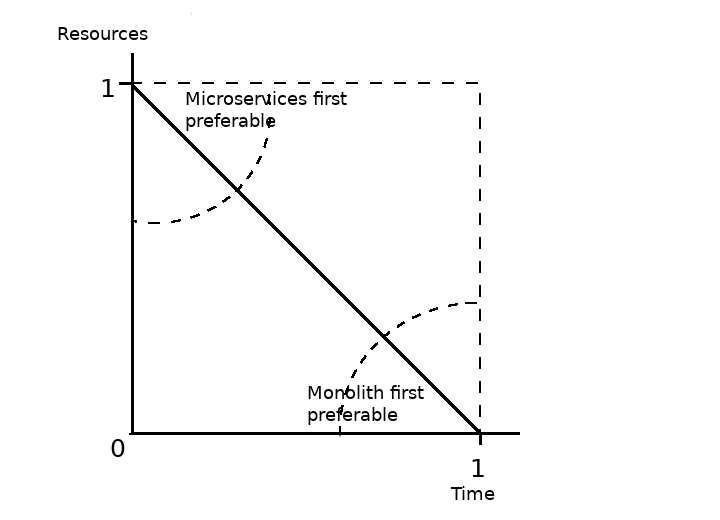

Microservices First vs Monolith First¶
Существует два классических подхода к созданию микросервисных приложений - Microservices First и Monolith First. И если превосходства последнего широко освещены рядом известных авторитетов в области архитектуры, такими как Sam Newman, Robert Martin, Martin Fowler и др., то освещенность превосходств первого оставляет желать лучшего. Именно эта причина и побудила меня разобраться в этом вопросе.
Содержание
Данный пост не рассматривает превосходств микросервисной или монолитной архитектуры, а рассматривает только два разных способа достижения микросервисной архитектуры. Я исхожу из предположения, что вы уже знакомы с превосходствами обоих видов архитектур, и сделали свой выбор в пользу микросервисной.
Monolith First¶
Monolith First представляет собой двухфазную разработку микросервисного приложения, в первой фазе которого приложение имеет особую форму монолита, с низким сопряжением компонентов (loosely coupled), в котором изначально определены швы для “распила”. Обычно такой монолит активно использует концепцию DDD (см. Chapter 3 “How to Model Services” (“Premature Decomposition”) of “Building Microservices” [1] by Sam Newman) или Use Case (см. Chapter 16 “Independence” (“Operation”, “Decoupling mode”, “Decoupling modes (againe)”) of “Clean Architecture” [2] by Robert C. Martin). Такой подход позволяет удешевить процесс Model Distillation, и подразумевает вывод компонентов Bounded Contexts в самостоятельно разворачиваемые сервисы после стабилизации контуров бизнес-моделей и границ контекстов, по мере назревания в этом реальной необходимости.
Отсюда вырисовывается первый мотив в пользу Monolith First - это потребность в Crunching Knowledge (переработке знаний), которая не позволяет сразу очертить стабильные контуры бизнес-моделей. Можно назвать этот момент “слабостью архитектуры”. Это не означает низкий уровень компетентности архитектора (скорее - наоборот). Просто это означает, что предпосылок для достижения стабильной архитектуры сразу не существует.
{kind=link}
Другим существенным мотивом в пользу Monolith First является потребность в достижении скорейшего выпуска на рынок первой работающей версии продукта при лимитированном количестве разработчиков.
{kind=link}
Недостатком Monolith First является высокая чувствительность к качеству реализации (конструирования), которая требует от разработчиков высокой компетентности и дисциплины. Это означает удорожание разработки, ведь привлечение разработчиков среднего и начального уровня нанесет урон изоляции компонентов (creeping coupling).
{kind=link}
На изображении - ожидаемое и реальное сопряжение (coupling) монолита при недостаточном уровне качества разработки. Изображение со статьи “Don’t start with a monolith” by Stefan Tilkov.
В таком случае, слабость архитектуры должна компенсироваться сильным качеством разработки. В то время как всегда выгоднее нанять одного опытного архитектора, нежели укомплектовать всю команду опытными разработчиками.
Microservices First¶
Исходя из мотивов в пользу Monolith First, становятся очевидны и мотивы в пользу Microservices First.
Первым существенным мотивом является сильная архитектура и слабое качество разработки. Например, архитектор уже обладает опытом в данной предметной области, и потребность в переработке знаний отсутствует. Возможность достигнуть стабильную архитектуру приложения сразу, позволяет широко привлекать для ее реализации разработчиков среднего и начального уровня.
Обмен данными между самими сервисами ведется через сетевые вызовы, чтобы упрочить обособленность сервисов и избежать рисков, сопряженных с тесными связями.
All communication between the services themselves are via network calls, to enforce separation between the services and avoid the perils of tight coupling.
- “Building Microservices” [1] by Sam Newman
Вторым ключевым мотивом является потребность в привлечении большого количества людей как на начальной, так и на финальной стадии разработки. Т.е. в случаях, когда нет ограниченности в ресурсах, но есть ограниченность в сроках разработки. Это позволяет обойти Brooks’s Law (Закон Брукса), к которому мы вскоре вернемся. Frederick P. Brooks еще много лет назад предвосхитил это достоинство микросервсиной архитектуры.
Хотя такой подход и накладывает дополнительные накладные расходы на начальном этапе разработки, но он компенсируется возможностью задействовать большее количество людей одновременно в параллельном режиме. Т.е. начальный этап получается дороже, но быстрее. И если накладные расходы для достижения раннего выпуска продукта на рынок не превышают упущенной выгоды, которой удалось избежать, то такой подход является выгодным для бизнеса. К тому же, как видно из приведенного ниже графика, накладные расходы начального этапа окупаются удешевлением разработки на более поздних этапах развития продукта.

На изображении - влияние микросервисной архитектуры на продуктивность. Изображение со статьи “Microservice Premium” by Martin Fowler.
В целом, превосходства Microservices First проявляются в следующих случаях:
Когда нет ограниченности в ресурсах, но есть ограниченность по времени.
Когда есть опытный в данной предметной области архитектор, но малоопытные разработчики (сетевые границы сервисов изолируют низкий уровень дисциплины и опыта разработчиков, и сдерживают ползучие зависимости (creeping coupling)).
Когда изначально требуется гетерогенность технологий. Например, для решения различных задач в рамках одного приложения требуется использовать различные языки программирования, хранилища данных, фреймворки и т.д.
Когда требуется реализовать на уровне приложения соблюдение требований местных Законов (например, база персональных данных должна физически храниться у локального провайдера в пределах страны).
Когда в силу бизнес-требований требуется реиспользование сервисов несколькими приложениями (общая база пользователей для нескольких проектов)
Когда требуется разнородность решений по безопасности.
... наличие системы, разбитой на узкоспециализированные сервисы, дает нам множество вариантов решения проблемы. Возможность использования микросервисов не только позволяет уменьшить влияние любой отдельной бреши в системе безопасности, но и дает нам больше возможностей найти компромиссы в отношении издержек, связанных с более сложными и безопасными подходами в работе с конфиденциальными данными, и выбрать менее сложные подходы в тех случаях, когда риски оцениваются значительно ниже.
... having a system decomposed into finer-grained services gives us many more options as to how to solve a problem. Not only can having microservices potentially reduce the impact of any given breach, but it also gives us more ability to trade off the overhead of more complex and secure approaches where data is sensitive, and a lighter-weight approach when the risks are lower.
- “Building Microservices” [1] by Sam Newman
Когда команда разработчиков неоднородна и распределена, т.е. имеет слабую связанность.
Когда огромный объем обрабатываемых данных изначально требует широкого и гибкого масштабирования (например, скраперы).
Сравнительная таблица:
| Microservices First | Monolith First |
|---|---|
| Мало времени и много ресурсов | Много времени и мало ресурсов |
| Сильная архитектура но слабое качество разработки | Нестабильная архитектура и высокое качество разработки |
| Требуется гетерогенность технологий | Допускается однородность технологий |
| Наложены ограничения бизнес-требованиями или Законами | Ограничения не налагаются |
| Требуется разнородность решений по безопасности | Допускается однородность решений по безопасности |
| Слабо связанные команды (например, географически распределенные). | Сильно связанные команды (например, в одном офисе) |
| Требуется гибкое масштабирование на начальной фазе | Нет потребности в гибком масшатбировании |
The Brooks’s Law (Закон Брукса)¶
Если проект не укладывается в сроки, то добавление рабочей силы задержит его ещё больше.
Adding manpower to a late software project makes it later.
- The Brooks’s Law
Brooks’ law is based on the idea that communications overhead is a significant factor on software projects, and that work on a software project is not easily partitioned into isolated, independent tasks. Ten people can pick cotton ten times as fast as one person because the work is almost perfectly partitionable, requiring little communication or coordination. But nine women can’t have a baby any faster than one woman can because the work is not partitionable. Brooks argues that work on a software project is more like having a baby than picking cotton. When new staff are brought into a late project, they aren’t immediately productive, and they must be trained. The staff who must train them are already productive, but they lose productivity while they’re training new staff. Brooks argues that, on balance, more effort is lost to training and additional coordination and communications overhead than is gained when the new staff eventually becomes productive.
- Steve McConnell, “Brooks’ Law Repealed?“
Решение этой проблемы предлагает сам Брукс:
Число занятых и число месяцев являются взаимозаменяемыми величинами лишь тогда, когда задачу можно распределить среди ряда работников, которые не имеют между собой взаимосвязи.
Men and months are interchangeable commodities only when a task can be partitioned among many workers with no communication among them.
- Frederick P. Brooks, “The Mythical Man-Month Essays on Software Engineering” [3]
“Microservices’ main benefit, in my view, is enabling parallel development by establishing a hard-to-cross boundary between different parts of your system.
- Stefan Tilkov, a co-founder and principal consultant at innoQ, “Don’t start with a monolith“
Продуктивность¶
Существует две противоречащие друг другу проблемы, сформулированные Frederick Brooks. С одной стороны:
Выше я доказал, что само число разработчиков, действия которых нужно согласовывать, оказывает влияние на стоимость проекта, поскольку значительная часть издержек вызвана необходимостью общения и устранения отрицательных последствий разобщенности (системная отладка). Это также наводит на мысль, что желательно разрабатывать системы возможно меньшим числом людей. Действительно, опыт разработки больших программных систем, как правило, показывает, что подход с позиций грубой силы влечет удорожание, замедленность, неэффективность, а создаваемые в результате системы не являются концептуально целостными. Список, иллюстрирующий это, бесконечен: OS/360, Exec 8, Scop 6600, Multics, TSS, SAGE и другие.
I have earlier argued that the sheer number of minds to be coordinated affects the cost of the effort, for a major part of the cost is communication and correcting the ill effects of miscommunication (system debugging). This, too, suggests that one wants the system to be built by as few minds as possible. Indeed, most experience with large programming systems shows that the brute-force approach is costly, slow, inefficient, and produces systems that are not conceptually integrated. OS/360, Exec 8, Scope 6600, Multics, TSS, SAGE, etc.—the list goes on and on.
- Frederick P. Brooks, “The Mythical Man-Month Essays on Software Engineering” [3]
... небольшие команды, работающие с небольшим объемом исходного кода, как правило, показывают более высокую продуктивность.
... smaller teams working on smaller codebases tend to be more productive!
- “Building Microservices” [1] by Sam Newman
Но с другой стороны:
В этом и состоит изъян идеи маленькой активной команды: для создания по-настоящему крупных систем ей потребуется слишком много времени. Посмотрим, как разработка OS/360 осуществлялась бы маленькой активной командой, допустим, из 10 человек. Положим, что они в семь раз более продуктивны средних программистов (что далеко от истины). Допустим, что уменьшение объема общения благодаря малочисленности команды позволило еще в семь раз повысить производительность. Допустим, что на протяжении всего проекта работает одна и та же команда. Таким образом, 5000/(10*7*7)=10, т.е. работу в 5000 человеко-лет они выполнят за 10 лет. Будет ли продукт представлять интерес через 10 лет после начала разработки или устареет благодаря стремительному развитию программных технологий?
This then is the problem with the small, sharp team concept: it is too slow for really big systems. Consider the OS/360 job as it might be tackled with a small, sharp team. Postulate a 10-man team. As a bound, let them be seven times as productive as mediocre programmers in both programming and documentation, because they are sharp. Assume OS/360 was built only by mediocre programmers (which is far from the truth). As a bound, assume that another productivity improvement factor of seven comes from reduced communication on the part of the smaller team. Assume the same team stays on the entire job. Well, 5000/(10 X 7 X 7 ) = 10; they can do the 5000 man-year job in 10 years. Will the product be interesting 10 years after its initial design? Or will it have been made obsolete by the rapidly developing software technology?
- Frederick P. Brooks, “The Mythical Man-Month Essays on Software Engineering” [3]
Возникает противоречие:
Дилемма представляется жестокой. Для эффективности и концептуальной целостности предпочтительнее, чтобы проектирование и создание системы осуществили несколько светлых голов. Однако для больших систем желательно поставить под ружье значительный контингент, чтобы продукт мог увидеть свет вовремя. Как можно примирить эти два желания?
The dilemma is a cruel one. For efficiency and conceptual integrity, one prefers a few good minds doing design and construction. Yet for large systems one wants a way to bring considerable manpower to bear, so that the product can make a timely appearance. How can these two needs be reconciled?
- Frederick P. Brooks, “The Mythical Man-Month Essays on Software Engineering” [3]
Решение этой проблемы становится возможным с качественным отделением архитектуры от реализации (с чем отлично справляются сетевые границы микросервисов):
Архитектура и разработка должны быть тщательно разделены. Как сказал Блау (Blaauw), «архитектура говорит, что должно произойти, а разработка - как сделать, чтобы это произошло». В качестве простого примера он приводит часы, архитектура которых состоит из циферблата, стрелок и заводной головки. Ребенок, освоивший это архитектуру, с одинаковой легкостью может узнать время и по ручным часам, и по часам на колокольне. Исполнение же и его реализация описывают, что происходит внутри: передача усилий и управление точностью каждым из многих механизмов.
Architecture must be carefully distinguished from implementation. As Blaauw has said, “Where architecture tells what happens, implementation tells how it is made to happen.” He gives as a simple example a clock, whose architecture consists of the face, the hands, and the winding knob. When a child has learned this architecture, he can tell time as easily from a wristwatch as from a church tower. The implementation, however, and its realization, describe what goes on inside the case—powering by any of many mechanisms and accuracy control by any of many.
- Frederick P. Brooks, “The Mythical Man-Month Essays on Software Engineering” [3]
Mills’s Proposal (Предложение Миллза):
Предложение Харлана Миллза дает свежее и творческое решение. Миллз предложил, чтобы на каждом участке работы была команда разработчиков, организованная наподобие бригады хирургов, а не мясников. Имеется в виду, что не каждый участник группы будет врезаться в задачу, но резать будет один, а остальные оказывать ему всевозможную поддержку, повышая его производительность и плодотворность.
При некотором размышлении ясно, что эта идея приведет к желаемому, если ее удастся осуществить. Лишь несколько голов занято проектированием и разработкой, и в то же время много работников находится на подхвате. Будет ли такая организация работать? Кто играет роль анестезиологов и операционных сестер в группе программистов, а как осуществляется разделение труда? Чтобы нарисовать картину работы такой команды с включением всех мыслимых видов поддержки, я позволю себе вольное обращение к метафорам.
A proposal by Harlan Mills offers a fresh and creative solution. Mills proposes that each segment of a large job be tackled by a team, but that the team be organized like a surgical team rather than a hog-butchering team. That is, instead of each member cutting away on the problem, one does the cutting and the others give him every support that will enhance his effectiveness and productivity.
A little thought shows that this concept meets the desiderata, if it can be made to work. Few minds are involved in design and construction, yet many hands are brought to bear. Can it work? Who are the anesthesiologists and nurses on a programming team, and how is the work divided? Let me freely mix metaphors to suggest how such a team might work if enlarged to include all conceivable support.
- Frederick P. Brooks, “The Mythical Man-Month Essays on Software Engineering” [3]
Обратите внимание на слова “эта идея приведет к желаемому, если ее удастся осуществить”. Именно эту задачу успешно решает микросервисная архитектура, позволяя объединить вместе большой размер команды и продуктивность, т.е., осуществить масштабирование команды без ущерба производительности.
... мы стремимся к тому, чтобы сервисы создавались в результате разбиения системы на такие части, при которых темпы развития внутри сервисов были намного выше темпов развития между сервисами.
... we aim to ensure our services are decomposed such that the pace of change inside a service is much higher than the pace of change between services.
- “Building Microservices” [1] by Sam Newman
One case study was particularly interesting. The team had made the wrong choice, using microservices on a system that wasn’t complex enough to cover the Microservice Premium. The project got in trouble and needed to be rescued, so lots more people were thrown onto the project. At this point the microservice architecture became helpful, because the system was able to absorb the rapid influx of developers and the team was able to leverage the larger team numbers much more easily than is typical with a monolith. As a result the project accelerated to a productivity greater than would have been expected with a monolith, enabling the team to catch up. The result was still a net negative, in that the software cost more staff-hours than it would have done if they had gone with a monolith, but the microservices architecture did support ramp up.
- “Microservice Trade-Offs” by MartiFowler
Netflix и Amazon
Наверное, идея обязательной согласованности организации и архитектуры может быть неплохо проиллюстрирована на примере Amazon и Netflix. В Amazon довольно рано начали понимать преимущества владения командами полным жизненным циклом управляемых ими систем. Там решили, что команды должны всецело распоряжаться теми системами, за которые они отвечают, управляя всем жизненным циклом этих систем. Но в Amazon также знали, что небольшие команды могут работать быстрее больших. Это привело к созданию команд, которые можно было бы накормить двумя пиццами. Это стремление к созданию небольших команд, владеющих полным жизненным циклом своих сервисов, и стало основной причиной того, что в Amazon была разработана платформа Amazon Web Services. Для обеспечения самодостаточности своих команд компании понадобилось создать соответствующий инструментарий. Этот пример был взят на вооружение компанией Netflix и с самого начала определил формирование ее структуры вокруг небольших независимых команд, образуемых с прицелом на то, что создаваемые ими сервисы также будут независимы друг от друга. Тем самым обеспечивалась оптимизация скорости изменения архитектуры систем. Фактически в Netflix разработали организационную структуру для желаемой архитектуры создаваемых систем.
Netflix and Amazon
Probably the two poster children for the idea that organizations and architecture should be aligned are Amazon and Netflix. Early on, Amazon started to understand the benefits of teams owning the whole lifecycle of the systems they managed. It wanted teams to own and operate the systems they looked after, managing the entire lifecycle. But Amazon also knew that small teams can work faster than large teams. This led famously to its two-pizza teams, where no team should be so big that it could not be fed with two pizzas. This driver for small teams owning the whole lifecycle of their services is a major reason why Amazon developed Amazon Web Services. It needed to create the tooling to allow its teams to be self-sufficient. Netflix learned from this example, and ensured that from the beginning it structured itself around small, independent teams, so that the services they created would also be independent from each other. This ensured that the architecture of the system was optimized for speed of change. Effectively, Netflix designed the organizational structure for the system architecture it wanted.
- “Building Microservices” [1] by Sam Newman
Особенность утверждений Брукса¶
Брукс интересен тем, что умудрился доказать важность строго разделенной (распределенной) архитектуры (по сути - микросервисов), важность наличия в проекте единоначалия архитектора и… как это не удивительно для 1995 года - важность итеративной разработки (Agile).
Agile?¶
В основе возможности осуществления итеративной разработки лежит эволюционирующая (инкрементальная) архитектура - Evolutionary Architecture. Вопреки широко распространенному мнению, Микросервисная Архитектура хорошо сочетается с Evolutionary Architecture, что прекрасно раскрывается в статье “Microservices as an Evolutionary Architecture” by Neal Ford, Rebecca Parsons. Это ставит точку в спорах о том, сочетается ли Микросервисная Архитектура с Agile.
Другие ссылки по теме¶
Footnotes
| [1] | (1, 2, 3, 4, 5, 6) “Building Microservices. Designing Fine-Grained Systems” by Sam Newman |
| [2] | “Clean Architecture: A Craftsman’s Guide to Software Structure and Design” by Robert C. Martin |
| [3] | (1, 2, 3, 4, 5, 6) “The Mythical Man-Month Essays on Software Engineering” by Frederick P. Brooks |